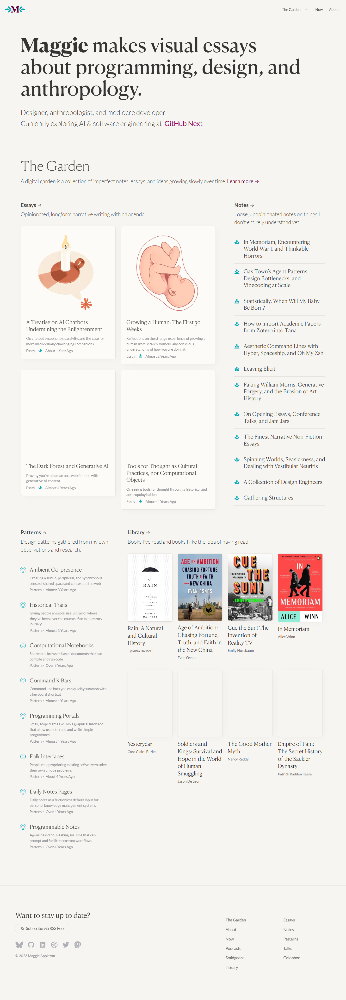
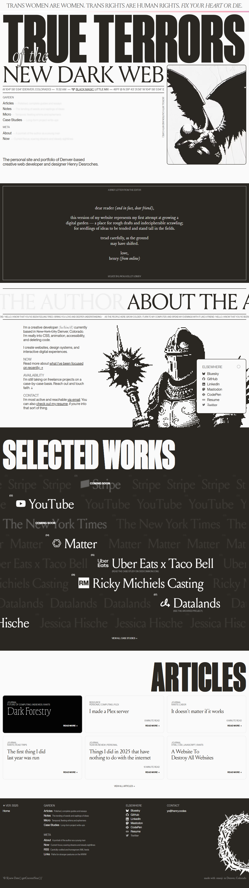
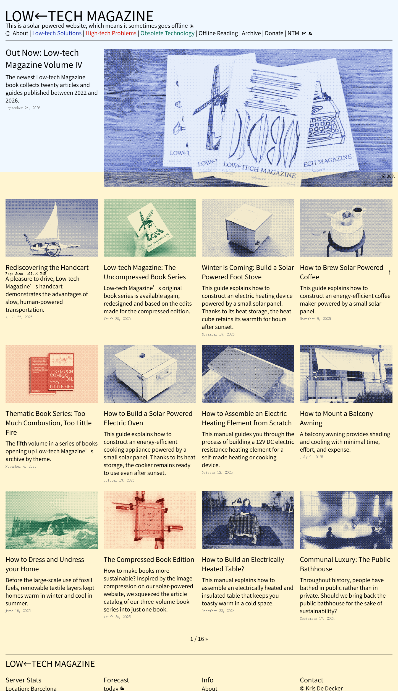
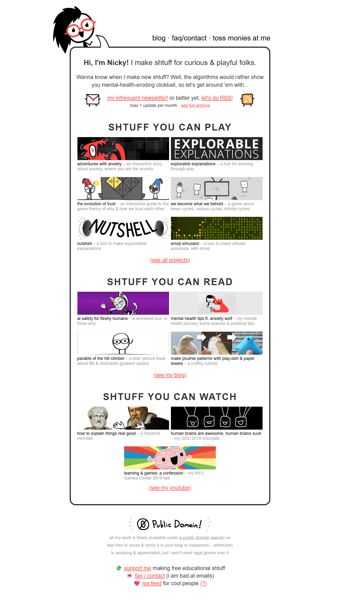
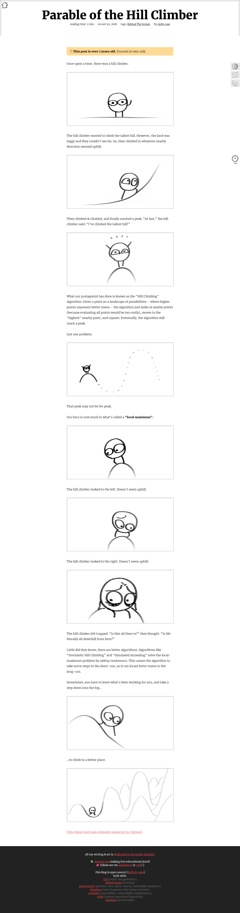
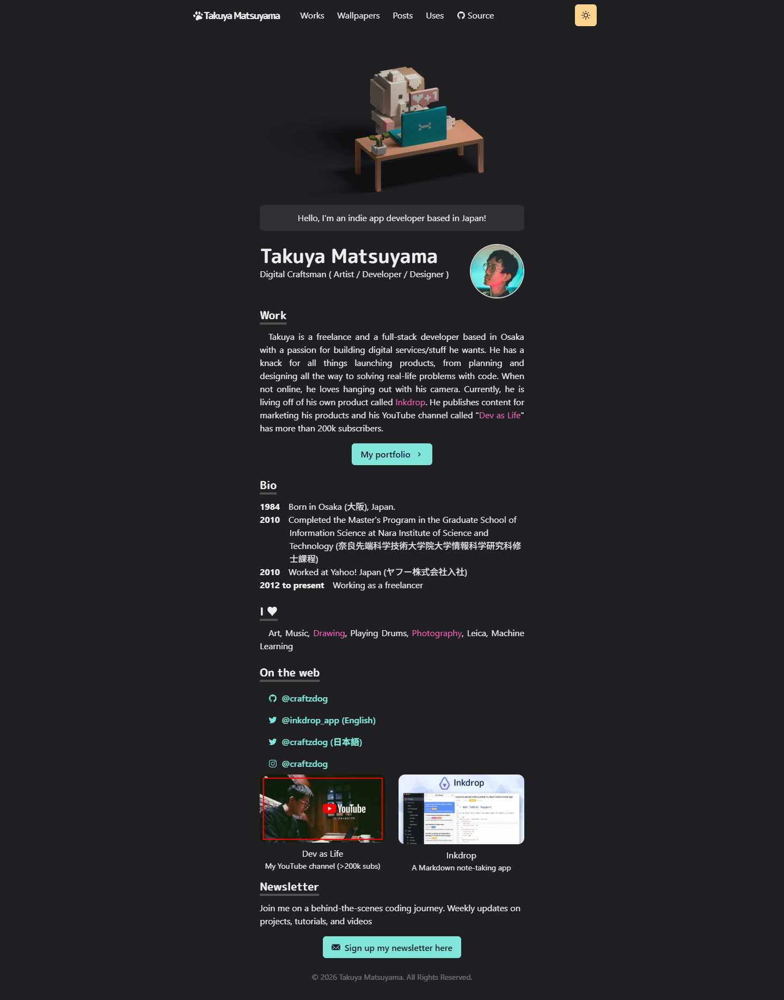
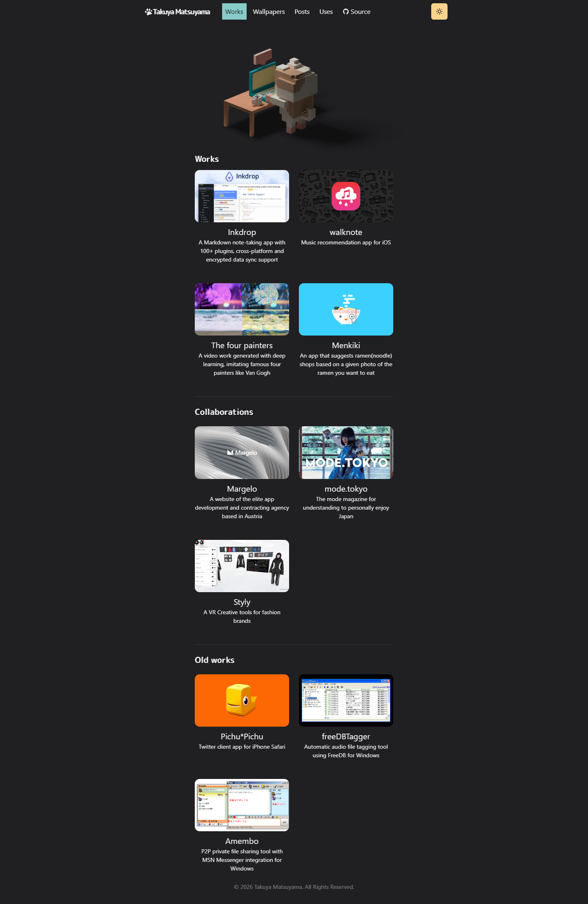
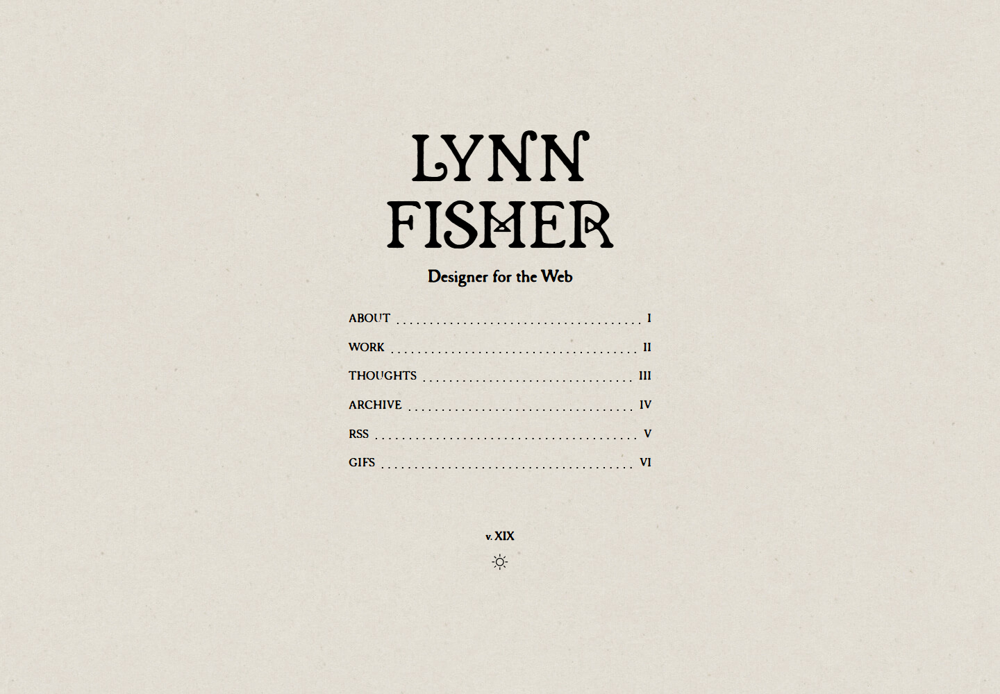
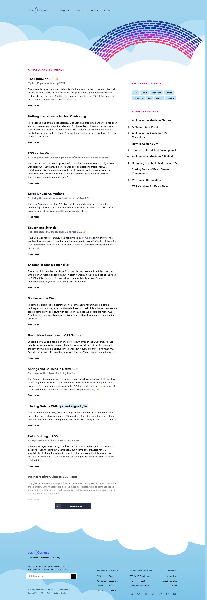

ICEAXING / VISUAL RESEARCH / 2026.11.02先找到不同的美术语言，
再重新设计同一段旅程。
本页是参考截图索引，不是新样稿。已访问七个主要参考站和三个补充内页，并保存桌面与手机截图。点击截图查看完整原图，点击来源访问原站。
保留原有封面与四个内容章节。本轮未修改正式页面；下方五种方向属于调研后的设计推导，不代表原站提供的模板。
封面技术栈学习笔记生活日常沿途随记
阅读完整调研报告 →
真实参考与截图

个人博客／数字花园Maggie Appleton
插画文章卡、纯文字笔记和书架并存。重点参考内容类型的差异，而不是复制同一个卡片容器。
内容索引内页The Garden
主题、内容类型与成长阶段构成索引。参考如何容纳大量内容，以及摘要和元信息的层级。

个人博客／作品集Henry From Online
刊物式大字、黑白分区、点阵插图、三列文章卡与大字项目横行。风格进入整个页面骨架。

杂志型内容站Low-tech Magazine
双色网点图统一照片；首篇跨栏，后续四列。参考图像处理和版面节奏。

个人创作站／博客入口Nicky Case
手绘角色、粗轮廓、明亮点色和双列长横幅作品卡。内容按可玩、可读、可看分组。

漫画文章内页Parable of the Hill Climber
连续手绘分镜把攀登与抽象算法结合。参考图像与知识叙事的关系，不复制角色。

个人主页Takuya Matsuyama
体素小场景建立记忆点；下方保持清晰的平面文字与普通链接。

作品索引内页Takuya · Works
体素场景与双列项目缩略图并存；按作品、合作和旧作分组。

个人网站Lynn Fisher
当前主页呈现旧书扉页、装饰字、点线目录、罗马数字。主题不依赖大幅现代横幅。

技术博客Josh W. Comeau
云状边界与彩色图形负责气质；阅读区用文字层级、留白和侧栏保持秩序。
建议的五条美术方向
| 方向 | 美术语言 | 卡片布局 | 五章节落点 |
|---|
| A · 等距体素世界 | 规则方块与微缩模型 | 场景节点＋平面信息板 | 营地／工作台／图书室／生活小屋／驿站 |
| B · 自然博物图鉴 | 细线标注与水彩标本 | 大标本牌＋窄目录 | 扉页／器件剖面／教材目录／观察卡／采集标签 |
| C · 漫画分镜旅程 | 粗轮廓与平涂角色 | 不等大分镜＋气泡短记 | 开篇／实验室／教材章节／照片格／站牌对话 |
| D · 双色网点刊物 | 半色调照片与套印 | 跨栏头条＋多栏短卡 | 封面／工程专题／笔记索引／图像报道／短讯 |
| E · 古典雕版书册 | 排线雕版与书籍边饰 | 对开页＋图版卡＋页边注 | 藏书票／器械图版／分册／游记／信笺 |
部分全页截图含懒加载图片空位；静态截图不能代表完整动画体验。Poolsuite 只取得启动窗口，WINDOWS93 仅显示黑色启动阶段，两者均不作为完整页面证据。Dustin Brett、Cassie Codes 本次连接中断，未纳入结论。
Poolsuite 启动画面WINDOWS93 启动阶段后续样稿验收：五版去掉文字后仍能分辨；每版都有完整五章节；不能共用同一种山形、卡片外观与主布局。